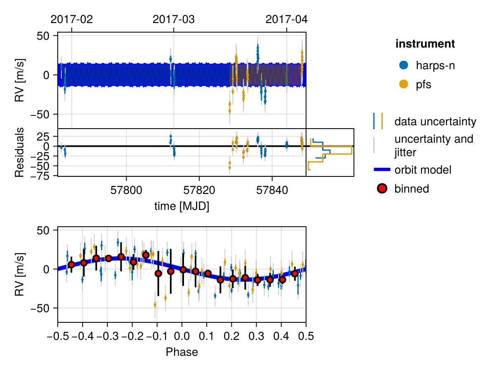
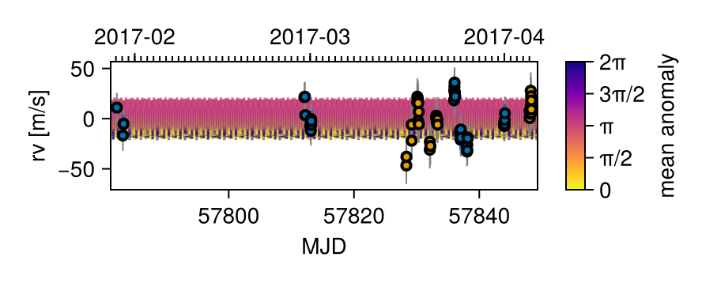
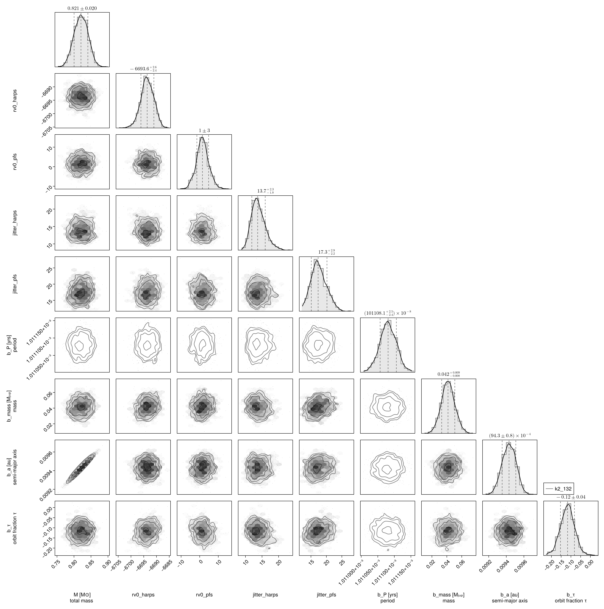
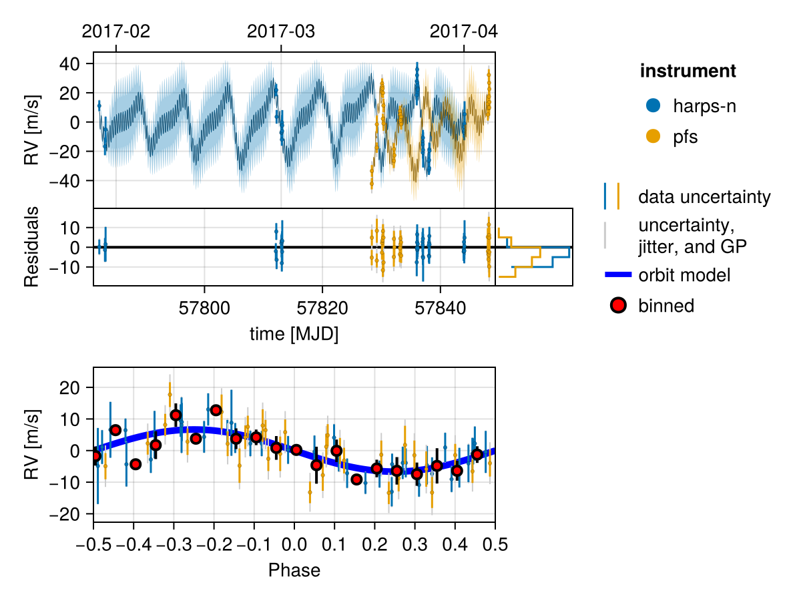
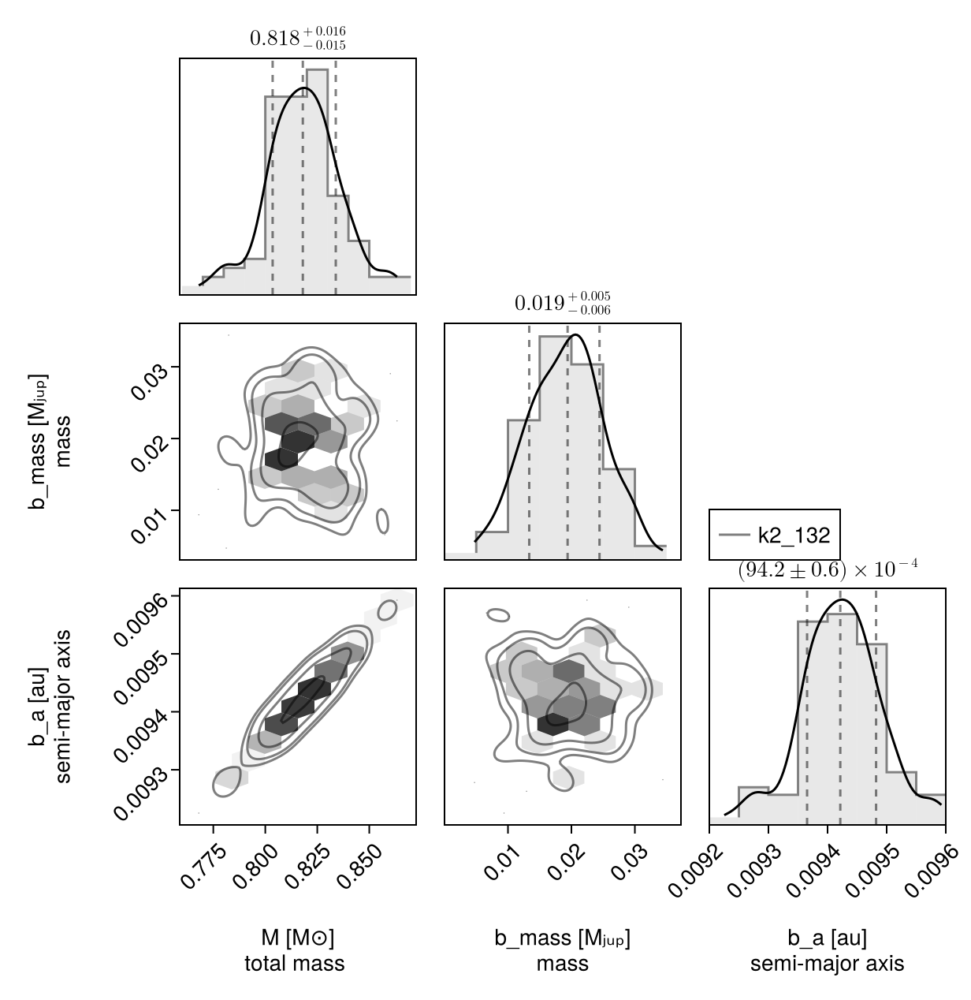

Fit Radial Velocity
You can use Octofitter to fit radial velocity data, either alone or in combination with other kinds of data. Multiple instruments (up to 10) are supported, as are gaussian processes to model stellar activity..
Radial velocity modelling is supported in Octofitter via the extension package OctofitterRadialVelocity. To install it, run pkg> add OctofitterRadialVelocity
For this example, we will fit the orbit of the planet K2-131 to perform the same fit as in the RadVel Gaussian Process Fitting tutorial.
We will use the following packages:
using Octofitter
using OctofitterRadialVelocity
using PlanetOrbits
using CairoMakie
using PairPlots
using CSV
using DataFrames
using DistributionsWe will start by downloading and preparing a table of radial velocity measurements, and create a StarAbsoluteRVLikelihood object to hold them.
The following functions allow you to directly load data from various public RV databases:
HARPS_DR1_rvs("star-name")HARPS_RVBank_observations("star-name")Lick_rvs("star-name")HIRES_rvs("star-name")
Basic Fit
Start by fitting a 1-planet Keplerian model.
Calling those functions with the name of a star will return a StarAbsoluteRVLikelihood table.
If you would like to manually specify RV data, use the following format:
rv_like = StarAbsoluteRVLikelihood(
# epoch is in units of MJD. `jd` is a helper function to convert.
# you can also put `years2mjd(2016.1231)`.
# rv and σ_rv are in units of meters/second
(epoch=jd(2455110.97985), rv=−6.54, σ_rv=1.30),
(epoch=jd(2455171.90825), rv=−3.33, σ_rv=1.09),
# ... etc.
instrument_name="insert name here"
)For this example, to replicate the results of RadVel, we will download their example data for K2-131 and format it for Octofitter:
rv_file = download("https://raw.githubusercontent.com/California-Planet-Search/radvel/master/example_data/k2-131.txt")
rv_dat_raw = CSV.read(rv_file, DataFrame, delim=' ')
rv_dat = DataFrame();
rv_dat.epoch = jd2mjd.(rv_dat_raw.time)
rv_dat.rv = rv_dat_raw.mnvel
rv_dat.σ_rv = rv_dat_raw.errvel
tels = sort(unique(rv_dat_raw.tel))
# This table includes data from two insturments. We create a separate
# likelihood object for each:
rvlike_harps = StarAbsoluteRVLikelihood(
rv_dat[rv_dat_raw.tel .== "harps-n",:],
instrument_name="harps-n",
offset=:rv0_harps,
jitter=:jitter_harps,
)
rvlike_pfs = StarAbsoluteRVLikelihood(
rv_dat[rv_dat_raw.tel .== "pfs",:],
instrument_name="pfs",
offset=:rv0_pfs,
jitter=:jitter_pfs,
)StarAbsoluteRVLikelihood Table with 3 columns and 31 rows:
epoch rv σ_rv
┌──────────────────────
1 │ 57828.4 -45.17 3.88
2 │ 57828.4 -36.47 4.03
3 │ 57829.2 -20.52 3.55
4 │ 57829.2 -4.58 6.07
5 │ 57830.1 17.71 3.56
6 │ 57830.1 23.34 3.48
7 │ 57830.2 21.34 3.51
8 │ 57830.2 19.92 3.26
9 │ 57830.2 -0.74 3.44
10 │ 57830.3 16.9 3.5
11 │ 57830.3 8.25 4.64
12 │ 57830.4 -4.06 4.91
13 │ 57832.1 -29.51 4.96
14 │ 57832.1 -21.56 4.11
15 │ 57832.2 -25.76 5.59
16 │ 57833.1 2.1 3.91
17 │ 57833.1 4.38 3.73
⋮ │ ⋮ ⋮ ⋮Now, create a planet. We can use the RadialVelocityOrbit type from PlanetOrbits.jl that requires fewer parameters (eg no inclination or longitude of ascending node). We could instead use a Visual{KepOrbit} or similar if we wanted to include these parameters and visualize the orbit in the plane of the sky.
@planet b RadialVelocityOrbit begin
e = 0
ω = 0.0
# To match RadVel, we set a prior on Period and calculate semi-major axis from it
P ~ truncated(
Normal(0.3693038/365.256360417, 0.0000091/365.256360417),
lower=0.0001
)
a = cbrt(system.M * b.P^2) # note the equals sign.
τ ~ UniformCircular(1.0)
tp = b.τ*b.P*365.256360417 + 57782 # reference epoch for τ. Choose an MJD date near your data.
# minimum planet mass [jupiter masses]. really m*sin(i)
mass ~ LogUniform(0.001, 10)
end
@system k2_132 begin
# total mass [solar masses]
M ~ truncated(Normal(0.82, 0.02),lower=0.1) # (Baines & Armstrong 2011).
rv0_harps ~ Normal(-6693,100) # m/s
rv0_pfs ~ Normal(0,100) # m/s
jitter_harps ~ LogUniform(0.1,100) # m/s
jitter_pfs ~ LogUniform(0.1,100) # m/s
end rvlike_harps rvlike_pfs bSystem model k2_132
Derived:
Priors:
M Truncated(Distributions.Normal{Float64}(μ=0.82, σ=0.02); lower=0.1)
rv0_harps Distributions.Normal{Float64}(μ=-6693.0, σ=100.0)
rv0_pfs Distributions.Normal{Float64}(μ=0.0, σ=100.0)
jitter_harps Distributions.LogUniform{Float64}(a=0.1, b=100.0)
jitter_pfs Distributions.LogUniform{Float64}(a=0.1, b=100.0)
Planet b
Derived:
e, ω, a, τ, tp,
Priors:
P Truncated(Distributions.Normal{Float64}(μ=0.001011081092683449, σ=2.4914008313533153e-8); lower=0.0001)
τy Distributions.Normal{Float64}(μ=0.0, σ=1.0)
τx Distributions.Normal{Float64}(μ=0.0, σ=1.0)
mass Distributions.LogUniform{Float64}(a=0.001, b=10.0)
Octofitter.UnitLengthPrior{:τy, :τx}: √(τy^2+τx^2) ~ LogNormal(log(1), 0.02)
StarAbsoluteRVLikelihood Table with 3 columns and 39 rows:
epoch rv σ_rv
┌─────────────────────────
1 │ 57782.2 -6682.78 3.71
2 │ 57783.1 -6710.55 5.95
3 │ 57783.2 -6698.96 8.76
4 │ 57812.1 -6672.32 4.0
5 │ 57812.2 -6672.0 4.22
6 │ 57812.2 -6690.31 4.63
7 │ 57813.0 -6701.27 4.12
8 │ 57813.1 -6700.71 5.34
9 │ 57813.1 -6695.97 3.67
10 │ 57813.1 -6705.87 4.23
11 │ 57813.1 -6694.27 5.12
12 │ 57813.2 -6699.99 5.0
13 │ 57813.2 -6696.17 10.43
14 │ 57836.0 -6675.4 7.03
15 │ 57836.0 -6665.92 7.48
16 │ 57836.0 -6661.9 6.03
17 │ 57836.1 -6657.92 5.08
⋮ │ ⋮ ⋮ ⋮StarAbsoluteRVLikelihood Table with 3 columns and 31 rows:
epoch rv σ_rv
┌──────────────────────
1 │ 57828.4 -45.17 3.88
2 │ 57828.4 -36.47 4.03
3 │ 57829.2 -20.52 3.55
4 │ 57829.2 -4.58 6.07
5 │ 57830.1 17.71 3.56
6 │ 57830.1 23.34 3.48
7 │ 57830.2 21.34 3.51
8 │ 57830.2 19.92 3.26
9 │ 57830.2 -0.74 3.44
10 │ 57830.3 16.9 3.5
11 │ 57830.3 8.25 4.64
12 │ 57830.4 -4.06 4.91
13 │ 57832.1 -29.51 4.96
14 │ 57832.1 -21.56 4.11
15 │ 57832.2 -25.76 5.59
16 │ 57833.1 2.1 3.91
17 │ 57833.1 4.38 3.73
⋮ │ ⋮ ⋮ ⋮
Note how the rvlike object was attached to the k2_132 system instead of the planet. This is because the observed radial velocity is of the star, and is caused by any/all orbiting planets.
The rv0 and jitter parameters specify priors for the instrument-specific offset and white noise jitter standard deviation. The _i index matches the inst_idx used to create the observation table.
Note also here that the mass variable is really msini, or the minimum mass of the planet.
We can now prepare our model for sampling.
model = Octofitter.LogDensityModel(k2_132)LogDensityModel for System k2_132 of dimension 9 and 71 epochs with fields .ℓπcallback and .∇ℓπcallback
Sample:
using Random
rng = Random.Xoshiro(0)
chain = octofit(rng, model)Chains MCMC chain (1000×27×1 Array{Float64, 3}):
Iterations = 1:1:1000
Number of chains = 1
Samples per chain = 1000
Wall duration = 29.28 seconds
Compute duration = 29.28 seconds
parameters = M, rv0_harps, rv0_pfs, jitter_harps, jitter_pfs, b_P, b_τy, b_τx, b_mass, b_e, b_ω, b_a, b_τ, b_tp
internals = n_steps, is_accept, acceptance_rate, hamiltonian_energy, hamiltonian_energy_error, max_hamiltonian_energy_error, tree_depth, numerical_error, step_size, nom_step_size, is_adapt, loglike, logpost, tree_depth, numerical_error
Summary Statistics
parameters mean std mcse ess_bulk ess_tail rh ⋯
Symbol Float64 Float64 Float64 Float64 Float64 Float ⋯
M 0.8208 0.0204 0.0006 1329.0246 811.9703 1.00 ⋯
rv0_harps -6693.6094 2.5625 0.0892 828.3986 543.4867 1.00 ⋯
rv0_pfs 1.5720 3.3758 0.1079 998.9529 702.6754 1.00 ⋯
jitter_harps 13.9263 2.0984 0.0670 1014.4038 676.9119 0.99 ⋯
jitter_pfs 17.5558 2.4963 0.0742 1179.9908 703.0214 1.00 ⋯
b_P 0.0010 0.0000 0.0000 1065.3768 709.8982 1.00 ⋯
b_τy 0.7271 0.1687 0.0055 980.0325 655.9396 1.00 ⋯
b_τx -0.6609 0.1857 0.0061 969.9251 637.3208 1.00 ⋯
b_mass 0.0417 0.0090 0.0003 688.4900 329.0919 1.00 ⋯
b_e 0.0000 0.0000 NaN NaN NaN N ⋯
b_ω 0.0000 0.0000 NaN NaN NaN N ⋯
b_a 0.0094 0.0001 0.0000 1328.5880 811.9703 0.99 ⋯
b_τ -0.1173 0.0369 0.0013 889.5366 673.5371 1.00 ⋯
b_tp 57781.9567 0.0136 0.0005 889.4799 673.5371 1.00 ⋯
2 columns omitted
Quantiles
parameters 2.5% 25.0% 50.0% 75.0% 97.5 ⋯
Symbol Float64 Float64 Float64 Float64 Float6 ⋯
M 0.7811 0.8066 0.8205 0.8351 0.859 ⋯
rv0_harps -6698.7591 -6695.2120 -6693.6492 -6691.8503 -6688.775 ⋯
rv0_pfs -4.9626 -0.6067 1.4789 3.6261 8.464 ⋯
jitter_harps 10.4962 12.4246 13.6845 15.1810 18.716 ⋯
jitter_pfs 12.9710 15.8051 17.3259 19.1100 22.756 ⋯
b_P 0.0010 0.0010 0.0010 0.0010 0.001 ⋯
b_τy 0.3683 0.6211 0.7346 0.8424 1.048 ⋯
b_τx -0.9832 -0.7893 -0.6667 -0.5489 -0.260 ⋯
b_mass 0.0243 0.0358 0.0416 0.0474 0.059 ⋯
b_e 0.0000 0.0000 0.0000 0.0000 0.000 ⋯
b_ω 0.0000 0.0000 0.0000 0.0000 0.000 ⋯
b_a 0.0093 0.0094 0.0094 0.0095 0.009 ⋯
b_τ -0.1889 -0.1414 -0.1171 -0.0942 -0.043 ⋯
b_tp 57781.9303 57781.9478 57781.9568 57781.9652 57781.983 ⋯
1 column omitted
Excellent! Let's plot the maximum likelihood orbit:
using CairoMakie: Makie
fig = OctofitterRadialVelocity.rvpostplot(model, chain) # saved to "k2_132-rvpostplot.png"
We can also plot a number of samples from the posterior:
using CairoMakie: Makie
octoplot(model, chain)
Create a corner plot:
using PairPlots
using CairoMakie: Makie
octocorner(model, chain)
Gaussian Process Fit
Let us now add a Gaussian process to model stellar activity. This should improve the fit.
We start by writing a functino that creates a Gaussian process kernel from a set of system parameters. We will create a quasi-periodic kernel.
using AbstractGPs
function gauss_proc_quasi_periodic(θ_system)
# θ_system is a named tuple of variable values for this posterior draw.
# Note: for multiple instruments, you can supply different gaussian process
# functions that e.g. use different hyper-parameter names.
η₁ = θ_system.gp_η₁ # h
η₂ = θ_system.gp_η₂ # λ
η₃ = θ_system.gp_η₃ # θ
η₄ = θ_system.gp_η₄ # ω
kernel = η₁^2 *
(SqExponentialKernel() ∘ ScaleTransform(1/(η₂))) *
(PeriodicKernel(r=[η₄]) ∘ ScaleTransform(1/(η₃)))
gp = GP(kernel)
return gp
endgauss_proc_quasi_periodic (generic function with 1 method)Now provide this function when we construct our likelihood object:
rvlike_harps = StarAbsoluteRVLikelihood(
rv_dat[rv_dat_raw.tel .== "harps-n",:],
instrument_name="harps-n",
offset=:rv0_harps,
jitter=:jitter_harps,
# NEW:
gaussian_process = gauss_proc_quasi_periodic
)
rvlike_pfs = StarAbsoluteRVLikelihood(
rv_dat[rv_dat_raw.tel .== "pfs",:],
instrument_name="pfs",
offset=:rv0_pfs,
jitter=:jitter_pfs,
# NEW:
gaussian_process = gauss_proc_quasi_periodic
)StarAbsoluteRVLikelihood Table with 3 columns and 31 rows:
epoch rv σ_rv
┌──────────────────────
1 │ 57828.4 -45.17 3.88
2 │ 57828.4 -36.47 4.03
3 │ 57829.2 -20.52 3.55
4 │ 57829.2 -4.58 6.07
5 │ 57830.1 17.71 3.56
6 │ 57830.1 23.34 3.48
7 │ 57830.2 21.34 3.51
8 │ 57830.2 19.92 3.26
9 │ 57830.2 -0.74 3.44
10 │ 57830.3 16.9 3.5
11 │ 57830.3 8.25 4.64
12 │ 57830.4 -4.06 4.91
13 │ 57832.1 -29.51 4.96
14 │ 57832.1 -21.56 4.11
15 │ 57832.2 -25.76 5.59
16 │ 57833.1 2.1 3.91
17 │ 57833.1 4.38 3.73
⋮ │ ⋮ ⋮ ⋮Note that the two instruments do not need to use the same Gaussian process kernels, nor the same hyper parameter names.
We create a new system model with added parameters gp_η₁ etc for the Gaussian process fit.
gp_explength_mean = 9.5*sqrt(2.) # sqrt(2)*tau in Dai+ 2017 [days]
gp_explength_unc = 1.0*sqrt(2.)
gp_perlength_mean = sqrt(1. /(2. *3.32)) # sqrt(1/(2*gamma)) in Dai+ 2017
gp_perlength_unc = 0.019
gp_per_mean = 9.64 # T_bar in Dai+ 2017 [days]
gp_per_unc = 0.12
# No change to planet model
@planet b RadialVelocityOrbit begin
e = 0
ω = 0.0
P ~ truncated(Normal(0.3693038/365.25, 0.0000091/365.25),lower=0.00001)
a = cbrt(system.M * b.P^2)
mass ~ LogUniform(0.001, 10)
τ ~ UniformCircular(1.0)
tp = b.τ*b.P*365.25 + 57782 # reference epoch for τ. Choose an MJD date near your data.
end
@system k2_132 begin
M ~ truncated(Normal(0.82, 0.02),lower=0.1) # (Baines & Armstrong 2011).
rv0_harps ~ Normal(-6693,100) # m/s
rv0_pfs ~ Normal(0,100) # m/s
jitter_harps ~ LogUniform(0.1,100) # m/s
jitter_pfs ~ LogUniform(0.1,100) # m/s
# Add priors on GP kernel hyper-parameters.
gp_η₁ ~ truncated(Normal(25,10),lower=0.1,upper=100)
# Important: ensure the period and exponential length scales
# have physically plausible lower and upper limits to avoid poor numerical conditioning
gp_η₂ ~ truncated(Normal(gp_explength_mean,gp_explength_unc),lower=5,upper=100)
gp_η₃ ~ truncated(Normal(gp_per_mean,1),lower=2, upper=100)
gp_η₄ ~ truncated(Normal(gp_perlength_mean,gp_perlength_unc),lower=0.2, upper=10)
end rvlike_harps rvlike_pfs b
model = Octofitter.LogDensityModel(k2_132)LogDensityModel for System k2_132 of dimension 13 and 71 epochs with fields .ℓπcallback and .∇ℓπcallback
Sample from the model as before:
# Seed the random number generator
using Random
rng = Random.Xoshiro(0)
chain = octofit(
rng, model,
adaptation = 100,
iterations = 100,
)Chains MCMC chain (100×31×1 Array{Float64, 3}):
Iterations = 1:1:100
Number of chains = 1
Samples per chain = 100
Wall duration = 828.19 seconds
Compute duration = 828.19 seconds
parameters = M, rv0_harps, rv0_pfs, jitter_harps, jitter_pfs, gp_η₁, gp_η₂, gp_η₃, gp_η₄, b_P, b_mass, b_τy, b_τx, b_e, b_ω, b_a, b_τ, b_tp
internals = n_steps, is_accept, acceptance_rate, hamiltonian_energy, hamiltonian_energy_error, max_hamiltonian_energy_error, tree_depth, numerical_error, step_size, nom_step_size, is_adapt, loglike, logpost, tree_depth, numerical_error
Summary Statistics
parameters mean std mcse ess_bulk ess_tail rha ⋯
Symbol Float64 Float64 Float64 Float64 Float64 Float6 ⋯
M 0.8182 0.0177 0.0081 4.6879 21.5943 1.197 ⋯
rv0_harps -6687.1737 8.1434 1.5337 27.0522 101.7705 1.015 ⋯
rv0_pfs -4.0394 11.2323 3.0194 16.8639 92.5822 1.069 ⋯
jitter_harps 0.8123 0.4353 0.0658 51.4704 79.0017 1.003 ⋯
jitter_pfs 4.9024 1.5776 0.6141 8.1515 37.3971 1.102 ⋯
gp_η₁ 22.3332 2.4992 1.7818 1.9370 37.7807 1.522 ⋯
gp_η₂ 13.3742 0.8615 0.3238 9.2578 73.5692 1.081 ⋯
gp_η₃ 7.8128 0.5543 0.0595 87.5594 51.5563 0.997 ⋯
gp_η₄ 0.4073 0.0147 0.0082 3.2476 16.4566 1.249 ⋯
b_P 0.0010 0.0000 0.0000 88.7355 54.8565 0.992 ⋯
b_mass 0.0191 0.0059 0.0005 114.4670 78.3393 0.995 ⋯
b_τy 0.5544 0.1602 0.0247 38.7881 25.8341 1.031 ⋯
b_τx -0.7855 0.1544 0.0152 113.7542 116.7774 0.999 ⋯
b_e 0.0000 0.0000 NaN NaN NaN Na ⋯
b_ω 0.0000 0.0000 NaN NaN NaN Na ⋯
b_a 0.0094 0.0001 0.0000 4.7104 21.5943 1.197 ⋯
b_τ -0.1515 0.0334 0.0035 92.8246 55.5379 0.998 ⋯
b_tp 57781.9440 0.0123 0.0013 92.8246 55.5379 0.998 ⋯
2 columns omitted
Quantiles
parameters 2.5% 25.0% 50.0% 75.0% 97.5 ⋯
Symbol Float64 Float64 Float64 Float64 Float6 ⋯
M 0.7804 0.8066 0.8181 0.8284 0.856 ⋯
rv0_harps -6702.1280 -6693.3474 -6687.2150 -6680.6511 -6673.764 ⋯
rv0_pfs -26.8925 -10.5181 -4.3696 2.5152 16.560 ⋯
jitter_harps 0.2905 0.5257 0.6950 0.9616 2.093 ⋯
jitter_pfs 2.5132 3.7351 4.7642 5.5945 8.560 ⋯
gp_η₁ 18.7909 20.5285 22.0489 23.8815 27.642 ⋯
gp_η₂ 11.8952 12.7871 13.4016 13.7261 15.353 ⋯
gp_η₃ 7.0395 7.3964 7.6564 8.1092 9.059 ⋯
gp_η₄ 0.3806 0.3964 0.4066 0.4180 0.436 ⋯
b_P 0.0010 0.0010 0.0010 0.0010 0.001 ⋯
b_mass 0.0076 0.0150 0.0194 0.0228 0.029 ⋯
b_τy 0.2257 0.4534 0.5543 0.6711 0.856 ⋯
b_τx -1.0307 -0.8954 -0.7957 -0.6835 -0.472 ⋯
b_e 0.0000 0.0000 0.0000 0.0000 0.000 ⋯
b_ω 0.0000 0.0000 0.0000 0.0000 0.000 ⋯
b_a 0.0093 0.0094 0.0094 0.0095 0.009 ⋯
b_τ -0.2121 -0.1743 -0.1521 -0.1285 -0.085 ⋯
b_tp 57781.9217 57781.9356 57781.9438 57781.9525 57781.968 ⋯
1 column omitted
For real data, we would want to increase the adaptation and iterations to about 1000 each.
Plot the results:
fig = OctofitterRadialVelocity.rvpostplot(model, chain) # saved to "k2_132-rvpostplot.png"
Corner plot:
octocorner(model, chain, small=true) # saved to "k2_132-pairplot-small.png"
It is expensive (per iteration) to fit Guassian processes. If you have many cores (or a cluster) available you might also considering using the Pigeons parallel tempered sampler with MPI. starting julia with multiple threads (julia --threads=auto) and using octofit_pigeons. Pigeons is less efficient with single-core, but has better parallelization scaling:
using Pigeons
chain, pt = octofit_pigeons(
model,
n_rounds=8,
n_chains=6,
n_chains_variational=0,
explorer=SliceSampler()
)
display(chain)See http://pigeons.run for details on setting up MPI, or create a GitHub issue if you would like assistance.